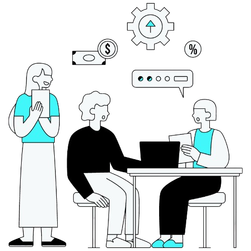

Customize font size here:
Combination of Communication and improvement.
-Providing and prioritizing a wider and safe education and assistance for all people, all age, and to those pwd who need special treatment in communication.
Want an app that fosters communication enhancement?
Try the indev Comprove and see more.
Scroll to see more sections